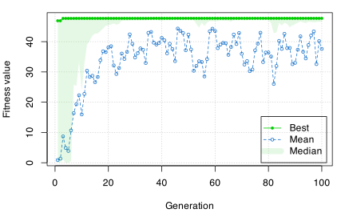
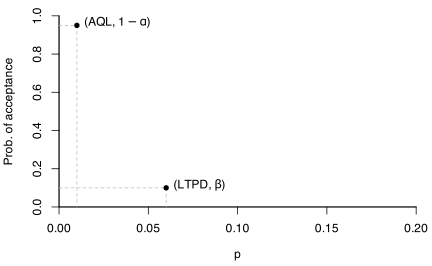
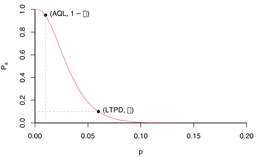
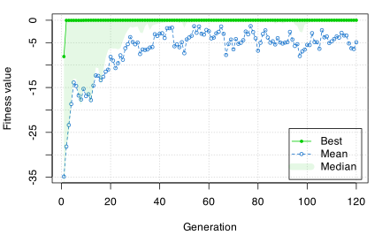
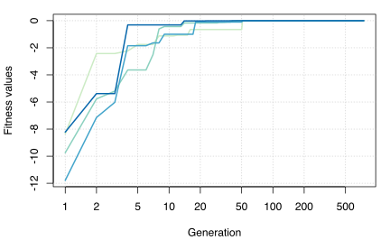
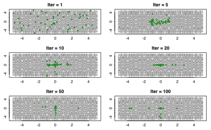

Introduction
Genetic algorithms (GAs) are stochastic search algorithms inspired by the basic principles of biological evolution and natural selection. GAs simulate the evolution of living organisms, where the fittest individuals dominate over the weaker ones, by mimicking the biological mechanisms of evolution, such as selection, crossover and mutation.
The R package GA provides a collection of general purpose functions for optimization using genetic algorithms. The package includes a flexible set of tools for implementing genetic algorithms search in both the continuous and discrete case, whether constrained or not. Users can easily define their own objective function depending on the problem at hand. Several genetic operators are available and can be combined to explore the best settings for the current task. Furthermore, users can define new genetic operators and easily evaluate their performances. Local search using general-purpose optimisation algorithms can be applied stochastically to exploit interesting regions. GAs can be run sequentially or in parallel, using an explicit master-slave parallelisation or a coarse-grain islands approach.
This document gives a quick tour of GA (version
3.2.5) functionalities. It was written in R Markdown, using the knitr package for
production. Further details are provided in the papers Scrucca (2013)
and Scrucca (2017). See also help(package="GA") for a list
of available functions and methods.
Function optimisation in one dimension
Consider the function defined over the range :
f <- function(x) (x^2+x)*cos(x)
lbound <- -10; ubound <- 10
curve(f, from = lbound, to = ubound, n = 1000)
GA <- ga(type = "real-valued", fitness = f, lower = c(th = lbound), upper = ubound)
summary(GA)
## ── Genetic Algorithm ───────────────────
##
## GA settings:
## Type = real-valued
## Population size = 50
## Number of generations = 100
## Elitism = 2
## Crossover probability = 0.8
## Mutation probability = 0.1
## Search domain =
## th
## lower -10
## upper 10
##
## GA results:
## Iterations = 100
## Fitness function value = 47.7056
## Solution =
## th
## [1,] 6.55971
plot(GA)
Function optimisation in two dimensions
Consider the Rastrigin function, a non-convex function often used as a test problem for optimization algorithms because it is a difficult problem due to its large number of local minima. In two dimensions it is defined as with for . It has a global minimum at where .
Rastrigin <- function(x1, x2)
{
20 + x1^2 + x2^2 - 10*(cos(2*pi*x1) + cos(2*pi*x2))
}
x1 <- x2 <- seq(-5.12, 5.12, by = 0.1)
f <- outer(x1, x2, Rastrigin)
persp3D(x1, x2, f, theta = 50, phi = 20, col.palette = bl2gr.colors)
filled.contour(x1, x2, f, color.palette = bl2gr.colors)
A GA minimisation search is obtained as follows (note the minus sign used in the definition of the local fitness function):
GA <- ga(type = "real-valued",
fitness = function(x) -Rastrigin(x[1], x[2]),
lower = c(-5.12, -5.12), upper = c(5.12, 5.12),
popSize = 50, maxiter = 1000, run = 100)
summary(GA)
## ── Genetic Algorithm ───────────────────
##
## GA settings:
## Type = real-valued
## Population size = 50
## Number of generations = 1000
## Elitism = 2
## Crossover probability = 0.8
## Mutation probability = 0.1
## Search domain =
## x1 x2
## lower -5.12 -5.12
## upper 5.12 5.12
##
## GA results:
## Iterations = 253
## Fitness function value = -1.708944e-06
## Solution =
## x1 x2
## [1,] -1.608155e-05 -9.140764e-05
plot(GA)
filled.contour(x1, x2, f, color.palette = bl2gr.colors,
plot.axes = { axis(1); axis(2);
points(GA@solution[,1], GA@solution[,2],
pch = 3, cex = 2, col = "white", lwd = 2) }
)
The GA search process can be visualised by defining a monitoring function as follows:
monitor <- function(obj)
{
contour(x1, x2, f, drawlabels = FALSE, col = grey(0.5))
title(paste("iteration =", obj@iter), font.main = 1)
points(obj@population, pch = 20, col = 2)
Sys.sleep(0.2)
}
GA <- ga(type = "real-valued",
fitness = function(x) -Rastrigin(x[1], x[2]),
lower = c(-5.12, -5.12), upper = c(5.12, 5.12),
popSize = 50, maxiter = 100,
monitor = monitor)Setting some members of the initial population
The suggestions argument to ga() function
call can be used to provide a matrix of solutions to be included in the
initial population.
For example, consider the optimisation of the Rastrigin function introduced above:
suggestedSol <- matrix(c(0.2,1.5,-1.5,0.5), nrow = 2, ncol = 2, byrow = TRUE)
GA1 <- ga(type = "real-valued",
fitness = function(x) -Rastrigin(x[1], x[2]),
lower = c(-5.12, -5.12), upper = c(5.12, 5.12),
suggestions = suggestedSol,
popSize = 50, maxiter = 1)
head(GA1@population)
## [,1] [,2]
## [1,] 0.2000000 1.500000
## [2,] -1.5000000 0.500000
## [3,] 0.8969867 -3.146516
## [4,] -1.7124756 3.832536
## [5,] -4.9327131 -1.587470
## [6,] 3.5326557 -4.079108As it can be seen, the first two solutions considered are those provided, whereas the rest is filled randomly as usual. A full search can be obtained as follows:
GA <- ga(type = "real-valued",
fitness = function(x) -Rastrigin(x[1], x[2]),
lower = c(-5.12, -5.12), upper = c(5.12, 5.12),
suggestions = suggestedSol,
popSize = 50, maxiter = 100)
summary(GA)
## ── Genetic Algorithm ───────────────────
##
## GA settings:
## Type = real-valued
## Population size = 50
## Number of generations = 100
## Elitism = 2
## Crossover probability = 0.8
## Mutation probability = 0.1
## Search domain =
## x1 x2
## lower -5.12 -5.12
## upper 5.12 5.12
## Suggestions =
## x1 x2
## 1 0.2 1.5
## 2 -1.5 0.5
##
## GA results:
## Iterations = 100
## Fitness function value = -2.78036e-06
## Solution =
## x1 x2
## [1,] -8.851972e-05 7.86049e-05Constrained optimisation
This example shows how to minimize an objective function subject to nonlinear inequality constraints and bounds using GAs. Source: https://www.mathworks.it/it/help/gads/examples/constrained-minimization-using-the-genetic-algorithm.html
We want to minimize a simple function of two variables and subject to the following nonlinear inequality constraints and bounds:
-
(inequality constraint),
-
(inequality constraint),
-
(bounds), and
- (bounds).
The above fitness function is known as “cam” as described in L.C.W. Dixon and G.P. Szego (eds.), Towards Global Optimisation 2, North-Holland, Amsterdam, 1978.
f <- function(x)
{ 100 * (x[1]^2 - x[2])^2 + (1 - x[1])^2 }
c1 <- function(x)
{ x[1]*x[2] + x[1] - x[2] + 1.5 }
c2 <- function(x)
{ 10 - x[1]*x[2] }Plot the function and the feasible regions (coloured areas):
ngrid <- 250
x1 <- seq(0, 1, length = ngrid)
x2 <- seq(0, 13, length = ngrid)
x12 <- expand.grid(x1, x2)
col <- adjustcolor(bl2gr.colors(4)[2:3], alpha = 0.2)
plot(x1, x2, type = "n", xaxs = "i", yaxs = "i")
image(x1, x2, matrix(ifelse(apply(x12, 1, c1) <= 0, 0, NA), ngrid, ngrid),
col = col[1], add = TRUE)
image(x1, x2, matrix(ifelse(apply(x12, 1, c2) <= 0, 0, NA), ngrid, ngrid),
col = col[2], add = TRUE)
contour(x1, x2, matrix(apply(x12, 1, f), ngrid, ngrid),
nlevels = 21, add = TRUE)
MATLAB solution:
x <- c(0.8122, 12.3104)
f(x)
## [1] 13573.99However, note that the provided solution does not satisfy the inequality constraints:
c1(x)
## [1] 0.00030688
c2(x)
## [1] 0.00149312A GA solution can be obtained by defining a penalised fitness function:
fitness <- function(x)
{
f <- -f(x) # we need to maximise -f(x)
pen <- sqrt(.Machine$double.xmax) # penalty term
penalty1 <- max(c1(x),0)*pen # penalisation for 1st inequality constraint
penalty2 <- max(c2(x),0)*pen # penalisation for 2nd inequality constraint
f - penalty1 - penalty2 # fitness function value
}Then
GA <- ga("real-valued", fitness = fitness,
lower = c(0,0), upper = c(1,13),
# selection = GA:::gareal_lsSelection_R,
maxiter = 1000, run = 200, seed = 123)
summary(GA)
## ── Genetic Algorithm ───────────────────
##
## GA settings:
## Type = real-valued
## Population size = 50
## Number of generations = 1000
## Elitism = 2
## Crossover probability = 0.8
## Mutation probability = 0.1
## Search domain =
## x1 x2
## lower 0 0
## upper 1 13
##
## GA results:
## Iterations = 339
## Fitness function value = -13584.49
## Solution =
## x1 x2
## [1,] 0.8120632 12.31468
fitness(GA@solution)
## [1] -13584.49
f(GA@solution)
## [1] 13584.49
c1(GA@solution)
## [1] -0.002319273
c2(GA@solution)
## [1] -0.0003015433A graph showing the solution found is obtained as:
plot(x1, x2, type = "n", xaxs = "i", yaxs = "i")
image(x1, x2, matrix(ifelse(apply(x12, 1, c1) <= 0, 0, NA), ngrid, ngrid),
col = col[1], add = TRUE)
image(x1, x2, matrix(ifelse(apply(x12, 1, c2) <= 0, 0, NA), ngrid, ngrid),
col = col[2], add = TRUE)
contour(x1, x2, matrix(apply(x12, 1, f), ngrid, ngrid),
nlevels = 21, add = TRUE)
points(GA@solution[1], GA@solution[2], col = "dodgerblue3", pch = 3) # GA solution
Integer optimisation
We consider here two approaches to integer optimisation via GAs, one using binary GA search, and one using real-valued GA search. In both cases an appropriate decoding function is used to convert the encoding of the decision variables to the natural encoding of the problem.
Consider the acceptance sampling example described in Scrucca (2013, Sec. 4.6). In essence, we must find the integers (sample size) and (acceptance number) that minimise a loss function measuring the difference between the objective and the achieved probability of acceptance of a lot. For more details see Scrucca (2013, Sec. 4.6) and references therein.
AQL <- 0.01; alpha <- 0.05
LTPD <- 0.06; beta <- 0.10
plot(0, 0, type="n", xlim=c(0,0.2), ylim=c(0,1), bty="l", xaxs="i", yaxs="i",
ylab="Prob. of acceptance", xlab=expression(p))
lines(c(0,AQL), rep(1-alpha,2), lty=2, col="grey")
lines(rep(AQL,2), c(1-alpha,0), lty=2, col="grey")
lines(c(0,LTPD), rep(beta,2), lty=2, col="grey")
lines(rep(LTPD,2), c(beta,0), lty=2, col="grey")
points(c(AQL, LTPD), c(1-alpha, beta), pch=16)
text(AQL, 1-alpha, labels=expression(paste("(", AQL, ", ", 1-alpha, ")")), pos=4)
text(LTPD, beta, labels=expression(paste("(", LTPD, ", ", beta, ")")), pos=4)
Binary search solution
decode1 <- function(x)
{
x <- gray2binary(x)
n <- binary2decimal(x[1:l1])
c <- min(n, binary2decimal(x[(l1+1):(l1+l2)]))
out <- structure(c(n,c), names = c("n", "c"))
return(out)
}
fitness1 <- function(x)
{
par <- decode1(x)
n <- par[1] # sample size
c <- par[2] # acceptance number
Pa1 <- pbinom(c, n, AQL)
Pa2 <- pbinom(c, n, LTPD)
Loss <- (Pa1-(1-alpha))^2 + (Pa2-beta)^2
-Loss
}
n <- 2:200 # range of values to search
b1 <- decimal2binary(max(n)) # max number of bits requires
l1 <- length(b1) # length of bits needed for encoding
c <- 0:20 # range of values to search
b2 <- decimal2binary(max(c)) # max number of bits requires
l2 <- length(b2) # length of bits needed for encoding
GA1 <- ga(type = "binary", fitness = fitness1,
nBits = l1+l2,
popSize = 100, maxiter = 1000, run = 100)
summary(GA1)
## ── Genetic Algorithm ───────────────────
##
## GA settings:
## Type = binary
## Population size = 100
## Number of generations = 1000
## Elitism = 5
## Crossover probability = 0.8
## Mutation probability = 0.1
##
## GA results:
## Iterations = 140
## Fitness function value = -5.049435e-05
## Solution =
## x1 x2 x3 x4 x5 x6 x7 x8 x9 x10 x11 x12 x13
## [1,] 0 1 1 1 1 1 0 0 1 0 0 1 1
decode1(GA1@solution)
## n c
## 87 2
plot(0,0,type="n", xlim=c(0,0.2), ylim=c(0,1), bty="l", xaxs="i", yaxs="i",
ylab=expression(P[a]), xlab=expression(p))
lines(c(0,AQL), rep(1-alpha,2), lty=2, col="grey")
lines(rep(AQL,2), c(1-alpha,0), lty=2, col="grey")
lines(c(0,LTPD), rep(beta,2), lty=2, col="grey")
lines(rep(LTPD,2), c(beta,0), lty=2, col="grey")
points(c(AQL, LTPD), c(1-alpha, beta), pch=16)
text(AQL, 1-alpha, labels=expression(paste("(", AQL, ", ", 1-alpha, ")")), pos=4)
text(LTPD, beta, labels=expression(paste("(", LTPD, ", ", beta, ")")), pos=4)
n <- 87; c <- 2
p <- seq(0, 0.2, by = 0.001)
Pa <- pbinom(2, 87, p)
lines(p, Pa, col = 2)
Real-valued search solution
decode2 <- function(x)
{
n <- floor(x[1]) # sample size
c <- min(n, floor(x[2])) # acceptance number
out <- structure(c(n,c), names = c("n", "c"))
return(out)
}
fitness2 <- function(x)
{
x <- decode2(x)
n <- x[1] # sample size
c <- x[2] # acceptance number
Pa1 <- pbinom(c, n, AQL)
Pa2 <- pbinom(c, n, LTPD)
Loss <- (Pa1-(1-alpha))^2 + (Pa2-beta)^2
return(-Loss)
}
GA2 <- ga(type = "real-valued", fitness = fitness2,
lower = c(2,0), upper = c(200,20)+1,
popSize = 100, maxiter = 1000, run = 100)
summary(GA2)
## ── Genetic Algorithm ───────────────────
##
## GA settings:
## Type = real-valued
## Population size = 100
## Number of generations = 1000
## Elitism = 5
## Crossover probability = 0.8
## Mutation probability = 0.1
## Search domain =
## x1 x2
## lower 2 0
## upper 201 21
##
## GA results:
## Iterations = 111
## Fitness function value = -5.049435e-05
## Solutions =
## x1 x2
## [1,] 87.89259 2.728577
## [2,] 87.78124 2.799476
## [3,] 87.81596 2.751274
## [4,] 87.88560 2.621085
## [5,] 87.88535 2.649951
## [6,] 87.90579 2.802553
t(apply(GA2@solution, 1, decode2))
## n c
## [1,] 87 2
## [2,] 87 2
## [3,] 87 2
## [4,] 87 2
## [5,] 87 2
## [6,] 87 2A comparison
nrep <- 100
systime <- loss <- niter <- matrix(as.double(NA), nrow = nrep, ncol = 2,
dimnames = list(NULL, c("Binary", "Real-valued")))
for(i in 1:nrep)
{
t <- system.time(GA1 <- ga(type = "binary", fitness = fitness1,
nBits = l1+l2, monitor = FALSE,
popSize = 100, maxiter = 1000, run = 100))
systime[i,1] <- t[3]
loss[i,1] <- -GA1@fitnessValue
niter[i,1] <- GA1@iter
#
t <- system.time(GA2 <- ga(type = "real-valued", fitness = fitness2,
lower = c(2,0), upper = c(200,20)+1,
monitor = FALSE,
popSize = 100, maxiter = 1000, run = 100))
systime[i,2] <- t[3]
loss[i,2] <- -GA2@fitnessValue
niter[i,2] <- GA2@iter
}
describe <- function(x) c(Mean = mean(x), sd = sd(x), quantile(x))
t(apply(systime, 2, describe))
# Mean sd 0% 25% 50% 75% 100%
# Binary 0.6902 0.20688 0.421 0.553 0.6340 0.7455 1.463
# Real-valued 0.3251 0.07551 0.252 0.275 0.2995 0.3470 0.665
t(apply(loss, 2, describe))*1000
# Mean sd 0% 25% 50% 75% 100%
# Binary 0.09382 0.1919 0.05049 0.05049 0.05049 0.05049 1.5386
# Real-valued 0.09600 0.1551 0.05049 0.05049 0.05049 0.05049 0.6193
t(apply(niter, 2, describe))
# Mean sd 0% 25% 50% 75% 100%
# Binary 160.8 48.31 100 129 146.0 172.2 337
# Real-valued 122.5 27.99 100 104 110.5 130.0 246Based on this small example, real-valued GA search is about 50% faster, converges in fewer iterations, and has the same accuracy as binary search.
Hybrid GAs
Hybrid Genetic Algorithms (HGAs) incorporate efficient local search algorithms into GAs. In case of real-valued optimisation problems, the GA package provides a simple way to start local searches from GA solutions after a certain number of iterations, so that, once a promising region is identified, the convergence to the global optimum can be speed up.
The use of HGAs is controlled by the optional argument
optim = TRUE (by default is set to FALSE).
Local searches are executed using the base R function
optim(), which makes available general-purpose optimisation
methods, such as Nelder–Mead, quasi-Newton with and without box
constraints, and conjugate-gradient algorithms. The local search method
to be used and other parameters are controlled with the optional
argument optimArgs, which must be a list with the following
structure and defaults:
optimArgs = list(method = "L-BFGS-B",
poptim = 0.05,
pressel = 0.5,
control = list(fnscale = -1, maxit = 100))For more details see help(ga).
Consider again the two-dimensional Rastrigin function defined previously. A HGA search is obtained as follows:
GA <- ga(type = "real-valued",
fitness = function(x) -Rastrigin(x[1], x[2]),
lower = c(-5.12, -5.12), upper = c(5.12, 5.12),
popSize = 50, maxiter = 1000, run = 100,
optim = TRUE)
summary(GA)
## ── Genetic Algorithm ───────────────────
##
## GA settings:
## Type = real-valued
## Population size = 50
## Number of generations = 1000
## Elitism = 2
## Crossover probability = 0.8
## Mutation probability = 0.1
## Search domain =
## x1 x2
## lower -5.12 -5.12
## upper 5.12 5.12
##
## GA results:
## Iterations = 109
## Fitness function value = 0
## Solution =
## x1 x2
## [1,] 0 0
plot(GA)
Note the improved solution obtained.
Parallel computing
By default searches performed using the GA package occur sequentially. In some cases, particularly when the evaluation of the fitness function is time consuming, parallelisation of the search algorithm may be able to speed up computing time. Starting with version 2.0, the GA package provides facilities for implementing parallelisation of genetic algorithms.
Parallel computing with GA requires the following packages to be installed: parallel (available in base R), doParallel, foreach, and iterators.
To use parallel computing with the GA package on a
single machine with multiple cores is simple as manipulating
the optional argument parallel in the ga()
function call.
The argument parallel can be a logical argument
specifying if parallel computing should be used (TRUE) or
not (FALSE, default) for evaluating the fitness function.
This argument could also be used to specify the number of cores to
employ; by default, this is taken from detectCores()
function in parallel package.
Two types of parallel functionality are implemented depending on system OS: on Windows only snow type functionality is available, while on POSIX operating systems, such as Unix, GNU/Linux, and Mac OSX, both snow and multicore (default) functionalities are available. In the latter case a string can be used to specify which parallelisation method should be used.
In all cases described above, at the end of GA iterations the cluster is automatically stopped by shutting down the workers.
Consider the following simple example where a pause statement is introduced to simulate an expensive fitness function.
library(GA)
fitness <- function(x)
{
Sys.sleep(0.01)
x*runif(1)
}
library(rbenchmark)
out <- benchmark(
GA1 = ga(type = "real-valued",
fitness = fitness, lower = 0, upper = 1,
popSize = 50, maxiter = 100, monitor = FALSE,
seed = 12345),
GA2 = ga(type = "real-valued",
fitness = fitness, lower = 0, upper = 1,
popSize = 50, maxiter = 100, monitor = FALSE,
seed = 12345, parallel = TRUE),
GA3 = ga(type = "real-valued",
fitness = fitness, lower = 0, upper = 1,
popSize = 50, maxiter = 100, monitor = FALSE,
seed = 12345, parallel = 2),
GA4 = ga(type = "real-valued",
fitness = fitness, lower = 0, upper = 1,
popSize = 50, maxiter = 100, monitor = FALSE,
seed = 12345, parallel = "snow"),
columns = c("test", "replications", "elapsed", "relative"),
order = "test",
replications = 10)
out$average <- with(out, average <- elapsed/replications)
out[,c(1:3,5,4)]
## test replications elapsed average relative
## 1 GA1 10 565.075 56.5075 3.975
## 2 GA2 10 142.174 14.2174 1.000
## 3 GA3 10 263.285 26.3285 1.852
## 4 GA4 10 155.777 15.5777 1.096The results above have been obtained on an iMac, Intel Core i5 at 2.8GHz, with 4 cores and 16 GB RAM, running OSX 10.11.
If a cluster of multiple machines is available,
ga() can be executed in parallel using all, or a subset of,
the cores available to the machines belonging to the cluster. However,
this option requires more work from the user, who needs to set up and
register a parallel back end.
For instance, suppose that we want to create a cluster of two
computers having IP addresses 141.250.100.1 and
141.250.105.3, respectively. For each computer we require 8
cores, so we aim at having a cluster of 16 cores evenly distributed on
the two machines. Note that communication between the master worker and
the cluster nodes is done via SSH, so you should configure ssh to use
password-less login. For more details see McCallum and Weston (2011,
Chapter 2).
library(doParallel)
workers <- rep(c("141.250.100.1", "141.250.105.3"), each = 8)
cl <- makeCluster(workers, type = "PSOCK")
registerDoParallel(cl)The code above defines a vector of workers containing
the IP address for each node of the cluster. This is used by
makeCluster() to create a PSOCK Snow cluster
object named cl. At this point, objects and functions, but
also R packages, required during the evaluation of fitness function must
be exported along the nodes of the cluster. For example, the
following code export the vector x, the fitness function
fun, and load the R package mclust, on each
node of the socket cluster:
clusterExport(cl, varlist = c("x", "fun"))
clusterCall(cl, library, package = "mclust", character.only = TRUE)At this point a ga() function call can be executed by
providing the argument parallel = cl. For instance:
GA5 <- ga(type = "real-valued",
fitness = fitness, lower = 0, upper = 1,
popSize = 50, maxiter = 100, monitor = FALSE,
seed = 12345, parallel = cl)Note that in this case the cluster must be explicitly stopped with the command:
stopCluster(cl)Island evolution
GAs can be designed to evolve using an Island evolution approach. Here the population is partitioned in a set of sub-populations (islands) in which isolated GAs are executed on separated processor runs. Occasionally, some individuals from an island migrate to another island, thus allowing sub-populations to share genetic material
This approach is implemented in the gaisl() function,
which has the same input arguments as the ga() function,
with the addition of the following argument:
numIslands: an integer value specifying the number of islands to use (by default is set to 4)migrationRate: a value in the range (0,1) which gives the proportion of individuals that undergo migration between islands in every exchange (by default equal to 0.10)migrationInterval: an integer value specifying the number of iterations at which exchange of individuals takes place (by default set at 10).
Parallel computing is used by default in the Island evolution approach. Hybridisation by local search is also available as discussed previously.
As an example, consider again the two-dimensional Rastrigin function. An Island GA search is obtained as follows:
GA <- gaisl(type = "real-valued",
fitness = function(x) -Rastrigin(x[1], x[2]),
lower = c(-5.12, -5.12), upper = c(5.12, 5.12),
popSize = 100,
maxiter = 1000, run = 100,
numIslands = 4,
migrationRate = 0.2,
migrationInterval = 50)
summary(GA)
## ── Islands Genetic Algorithm ───────────
##
## GA settings:
## Type = real-valued
## Number of islands = 4
## Islands pop. size = 25
## Migration rate = 0.2
## Migration interval = 50
## Elitism = 1
## Crossover probability = 0.8
## Mutation probability = 0.1
## Search domain =
## x1 x2
## lower -5.12 -5.12
## upper 5.12 5.12
##
## GA results:
## Iterations = 500
## Epochs = 10
## Fitness function values = -2.026812e-09 -2.026812e-09 -1.025768e-08 -1.559301e-08
## Solutions =
## x1 x2
## [1,] 2.518296e-06 -1.966953e-06
## [2,] 2.518296e-06 -1.966953e-06
## [3,] 5.434794e-07 -7.169985e-06
## [4,] -3.805585e-06 -8.007151e-06
plot(GA, log = "x")
Memoization
In certain circumstances, particularly with binary GAs, memoization can be used to speed up calculations by using cached results. This is easily obtained using the memoise package.
data(fat, package = "UsingR")
mod <- lm(body.fat.siri ~ age + weight + height + neck + chest + abdomen +
hip + thigh + knee + ankle + bicep + forearm + wrist, data = fat)
summary(mod)
x <- model.matrix(mod)[,-1]
y <- model.response(mod$model)
fitness <- function(string)
{
mod <- lm(y ~ x[,string==1])
-BIC(mod)
}
library(memoise)
mfitness <- memoise(fitness)
is.memoised(fitness)
## [1] FALSE
is.memoised(mfitness)
## [1] TRUE
library(rbenchmark)
tab <- benchmark(
GA1 = ga("binary", fitness = fitness, nBits = ncol(x),
popSize = 100, maxiter = 100, seed = 1, monitor = FALSE),
GA2 = ga("binary", fitness = mfitness, nBits = ncol(x),
popSize = 100, maxiter = 100, seed = 1, monitor = FALSE),
columns = c("test", "replications", "elapsed", "relative"),
replications = 10)
tab$average <- with(tab, elapsed/replications)
tab
## test replications elapsed relative average
## 1 GA1 10 59.071 5.673 5.9071
## 2 GA2 10 10.413 1.000 1.0413
# to clear cache use
forget(mfitness)Miscellanea
Applying a post-fitness function evaluation
In some circumstances we may want to apply a specific procedure after
the evaluation of the fitness function but before applying the genetic
operators. The optional argument postFitness can be used
for this task.
In the ga() function call the argument
postFitness can be used to specify a user-defined function
which, if provided, receives the current ga-class object as input,
performs post fitness-evaluation steps, and then returns the (eventually
updated version of) input object that will be employed in the following
GA search.
As an example, consider to save the GA population at each iteration steps to draw a graph of GA evolution. The following code implements the idea:
Rastrigin <- function(x1, x2)
{
20 + x1^2 + x2^2 - 10*(cos(2*pi*x1) + cos(2*pi*x2))
}
postfit <- function(object, ...)
{
pop <- object@population
# update info
if(!exists(".pop", envir = globalenv()))
assign(".pop", NULL, envir = globalenv())
.pop <- get(".pop", envir = globalenv())
assign(".pop", append(.pop, list(pop)), envir = globalenv())
# output the input ga object (this is needed!!)
object
}
GA <- ga(type = "real-valued",
fitness = function(x) -Rastrigin(x[1], x[2]),
lower = c(-5.12, -5.12), upper = c(5.12, 5.12),
popSize = 50, maxiter = 100, seed = 1,
postFitness = postfit)
str(.pop, max.level = 1, list.len = 5)
## List of 100
## $ : num [1:50, 1:2] 4.45 -2.95 1.55 -3.83 -2.38 ...
## $ : num [1:50, 1:2] 3.117 -4.391 -4.101 -1.536 -0.868 ...
## $ : num [1:50, 1:2] -0.1864 -0.7638 -0.0599 1.45 -1.7403 ...
## $ : num [1:50, 1:2] 0.632 0.111 0.944 -0.186 -0.925 ...
## $ : num [1:50, 1:2] -0.998 -1.055 -0.361 1.032 -1.154 ...
## [list output truncated]
x1 <- x2 <- seq(-5.12, 5.12, by = 0.1)
f <- outer(x1, x2, Rastrigin)
iter_to_show = c(1,5,10,20,50,100)
par(mfrow = c(3,2), mar = c(2,2,2,1),
mgp = c(1, 0.4, 0), tck = -.01)
for(i in seq(iter_to_show))
{
contour(x1, x2, f, drawlabels = FALSE, col = "grey50")
title(paste("Iter =", iter_to_show[i]))
points(.pop[[iter_to_show[i]]], pch = 20, col = "forestgreen")
}
References
McCallum, E. and Weston, S. (2011) Parallel R. O’Reilly Media.
Scrucca, L. (2013) GA: A Package for Genetic Algorithms in R. Journal of Statistical Software, 53/4, 1-37. https://doi.org/10.18637/jss.v053.i04
Scrucca, L. (2017) On some extensions to GA package: hybrid optimisation, parallelisation and islands evolution. The R Journal, 9/1, 187–206. https://doi.org/10.32614/RJ-2017-008
sessionInfo()
## R version 4.5.2 (2025-10-31)
## Platform: aarch64-apple-darwin20
## Running under: macOS Sequoia 15.6.1
##
## Matrix products: default
## BLAS: /System/Library/Frameworks/Accelerate.framework/Versions/A/Frameworks/vecLib.framework/Versions/A/libBLAS.dylib
## LAPACK: /Library/Frameworks/R.framework/Versions/4.5-arm64/Resources/lib/libRlapack.dylib; LAPACK version 3.12.1
##
## locale:
## [1] en_US.UTF-8/en_US.UTF-8/en_US.UTF-8/C/en_US.UTF-8/en_US.UTF-8
##
## time zone: Europe/Rome
## tzcode source: internal
##
## attached base packages:
## [1] stats graphics grDevices utils datasets methods base
##
## other attached packages:
## [1] GA_3.2.5 iterators_1.0.14 foreach_1.5.2 knitr_1.50
##
## loaded via a namespace (and not attached):
## [1] sass_0.4.10 generics_0.1.4 digest_0.6.39
## [4] magrittr_2.0.4 evaluate_1.0.5 grid_4.5.2
## [7] RColorBrewer_1.1-3 fastmap_1.2.0 jsonlite_2.0.0
## [10] pkgbuild_1.4.8 gridExtra_2.3 QuickJSR_1.8.1
## [13] scales_1.4.0 codetools_0.2-20 jquerylib_0.1.4
## [16] cli_3.6.5 rlang_1.1.6 crayon_1.5.3
## [19] cachem_1.1.0 yaml_2.3.12 StanHeaders_2.32.10
## [22] parallel_4.5.2 tools_4.5.2 rstan_2.32.7
## [25] inline_0.3.21 dplyr_1.1.4 colorspace_2.1-1
## [28] ggplot2_4.0.1 curl_7.0.0 vctrs_0.6.5
## [31] R6_2.6.1 matrixStats_1.5.0 stats4_4.5.2
## [34] lifecycle_1.0.4 V8_8.0.1 fs_1.6.6
## [37] htmlwidgets_1.6.4 pkgconfig_2.0.3 desc_1.4.3
## [40] pkgdown_2.1.3 RcppParallel_5.1.11-1 bslib_0.9.0
## [43] pillar_1.11.1 gtable_0.3.6 loo_2.9.0
## [46] glue_1.8.0 Rcpp_1.1.0 xfun_0.54
## [49] tibble_3.3.0 tidyselect_1.2.1 rstudioapi_0.17.1
## [52] farver_2.1.2 htmltools_0.5.9 rmarkdown_2.30
## [55] compiler_4.5.2 S7_0.2.1